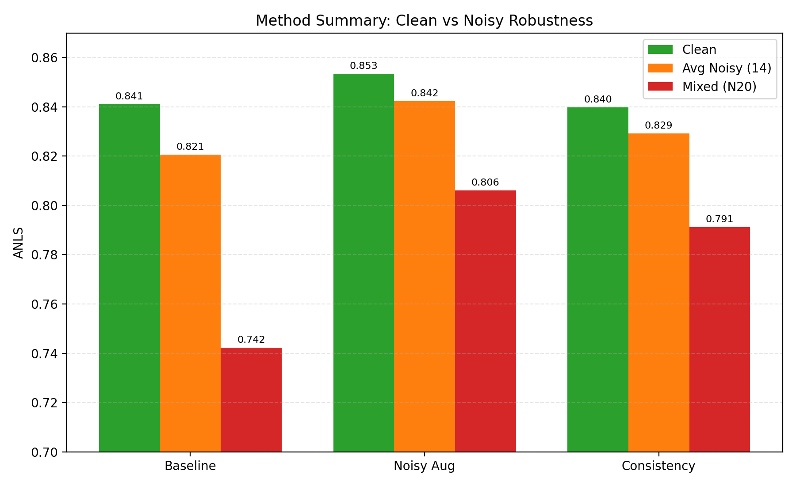

RON-ViT5 • ReceiptVQA • Demo báo cáo
Demo tái lập kết quả thực nghiệm
Từ cấu hình thí nghiệm → CSV kết quả L2 → biểu đồ báo cáo.
Phạm vi demo
Không chạy inference từng hóa đơn: checkout không lưu checkpoint. Các số và biểu đồ bên dưới lấy từ kết quả đã lưu.
Không chạy inference từng hóa đơn: checkout không lưu checkpoint. Các số và biểu đồ bên dưới lấy từ kết quả đã lưu.
Bước 1Chọn cấu hình
Bước 2Đọc kết quả L2
Bước 3So sánh độ bền
Bước 4Sinh biểu đồ
2. Kết quả đánh giá tại L2
–ANLS clean
–ANLS trung bình 14 nhiễu
–Drop trung bình
| Loại nhiễu | ANLS | Drop so với clean |
|---|
3. Đối chiếu bằng biểu đồ đã sinh

So sánh clean ANLS, ANLS trung bình dưới 14 nhiễu và mức suy giảm của ba phương pháp.
Tái lập biểu đồ từ các CSV hiện có
python scripts/plot_report_figures.pyLệnh đọc dữ liệu trong outputs/results/ và ghi lại các ảnh biểu đồ. Không cần checkpoint.